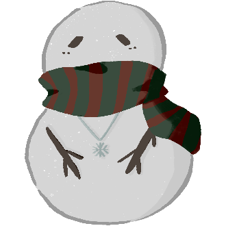
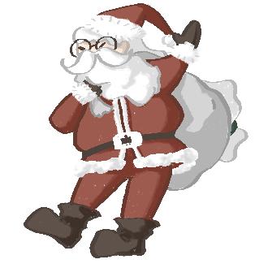
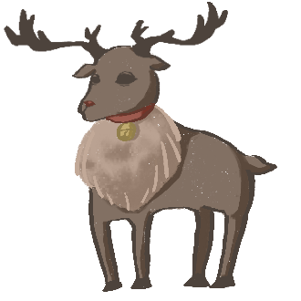
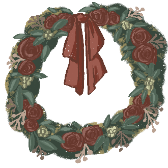
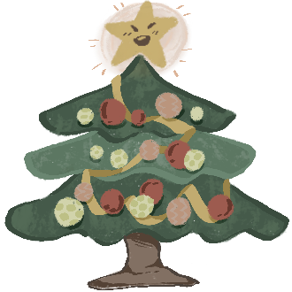

角
色
圖
鑑
＜＜滑鼠移到該角色即會顯示相關介紹＞＞

【雪人】
你來自北方遙遠的雪國，帶著一絲好奇心參加了這場茶會，長年待在冰天雪地的環境使你不太習慣這場熱絡的聚會，選擇當個透明人默默在一旁享用茶點觀察大家。

【聖誕老公公】
你的個性慷慨大方、樂於分享，喜歡召集朋友齊聚一堂。而且擁有強大的領導氣質和社交能力，經常毛遂自薦當領頭羊

【馴鹿】
你是一個務實、有準則的人，茶會上的點心與飲品甚至是餐桌桌巾，各個都是你精挑細選的。你習慣鉅細靡遺地規畫好每件事，是聖誕老公公的得力助手！

【聖誕花圈】
你是浪漫的代名詞，擁有豐富的感受與獨特的想法，喜歡追求美好的事物，行事風格不拘，不時會陷入自己內心的小世界。

【聖誕樹】
頭頂上放著一顆星星，身上戴著五顏六色的裝飾物，你是茶會中最blingbling的存在！任誰都抵擋不住你的魅力，難以將目光移開